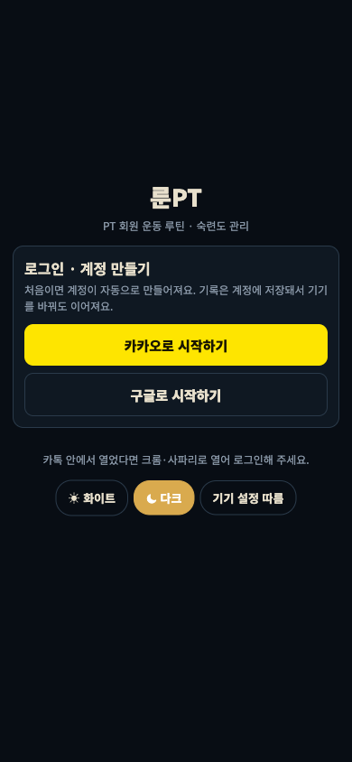
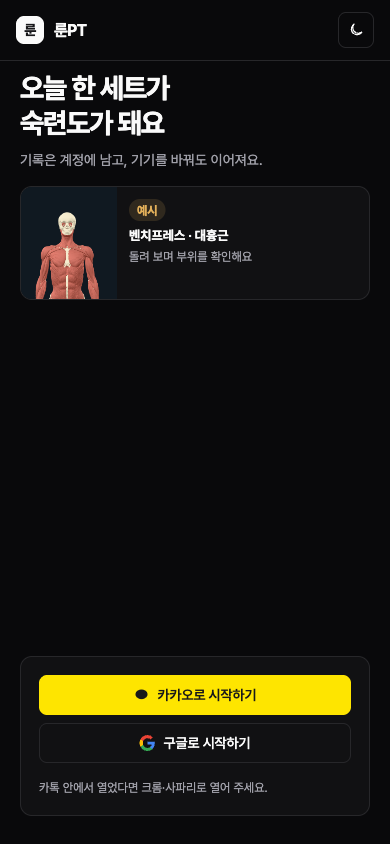
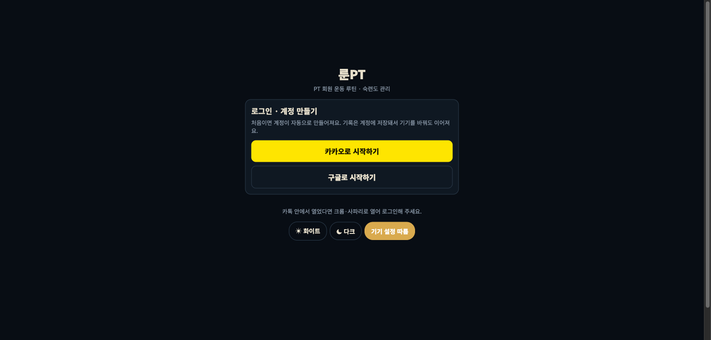
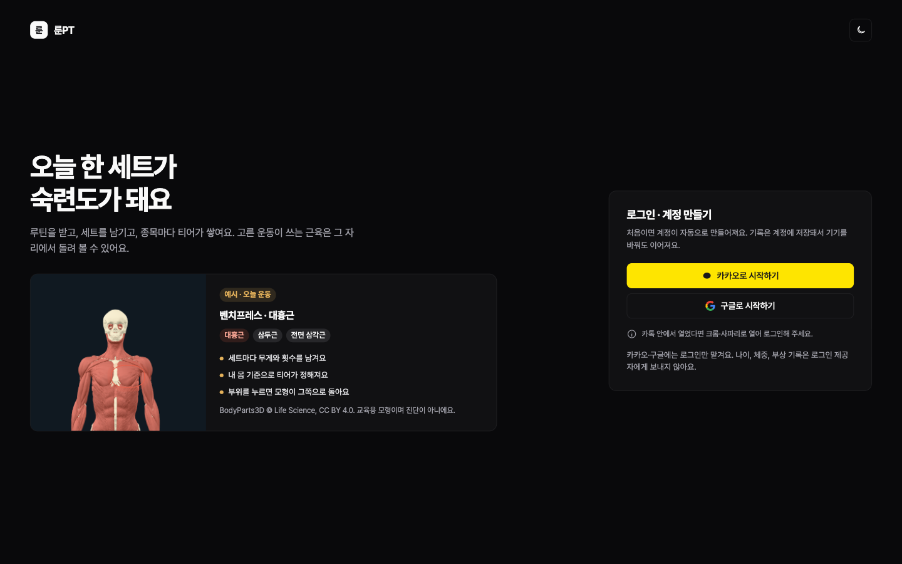
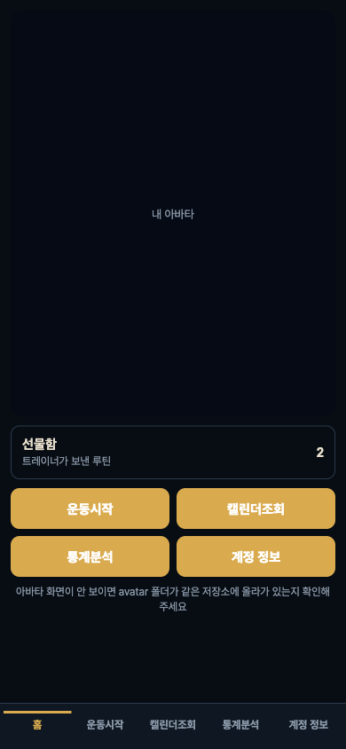
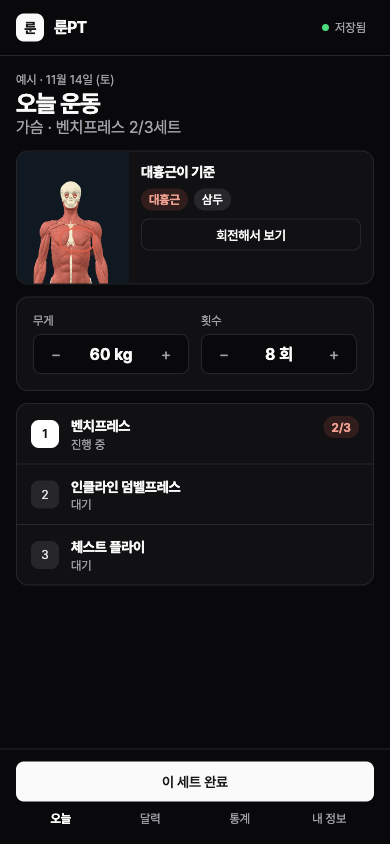
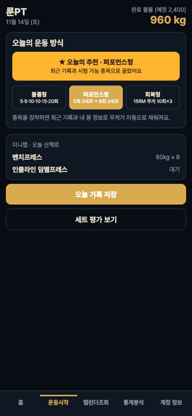

현재는 카드가 화면 한가운데 있고 테마 세 버튼이 로그인과 같이 놓입니다. 개선안은 제품이 먼저 보이고, 시작 버튼은 아래에 있습니다.


현재는 빈 배경 위의 카드입니다. 개선안은 왼쪽에 오늘 운동과 근육, 오른쪽에 로그인이 있습니다.


현재 홈은 아바타 아래에 같은 크기 버튼 네 개, 하단에는 같은 말의 탭이 다섯 개입니다. 개선안은 오늘 운동이 첫 화면이고 탭은 네 개입니다. 왼쪽은 로그인 전이라 소스 구조로 다시 그린 것입니다.


현재는 추천이 노란 큰 버튼이고, 저장이 또 하나의 채운 버튼입니다. 개선안은 세트 완료가 하나이고, 쓰는 근육이 같은 화면에 있습니다.
